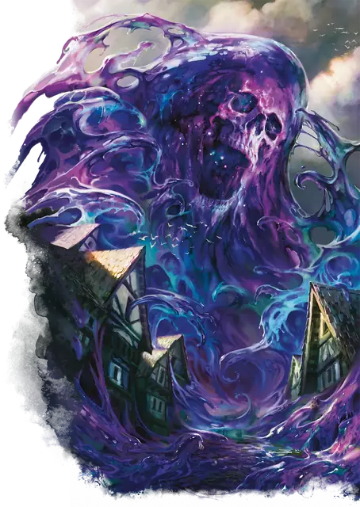

Сгусток уничтожения
Blob of Annihilation
Громадная Слизь (Титан), Нейтральная Злая

Класс Защиты 18 Инициатива +16 (26)
Хиты 448 (23к20 + 207)
Скорость 30 футов
| мод | спас | ||
|---|---|---|---|
| СИЛ | 27 | +8 | +8 |
| ЛОВ | 14 | +2 | +9 |
| ТЕЛ | 28 | +9 | +16 |
| мод | спас | ||
|---|---|---|---|
| ИНТ | 10 | +0 | +0 |
| МДР | 16 | +3 | +3 |
| ХАР | 10 | +0 | +0 |
Сопротивление урону Дробящий, Колющий, Рубящий
Иммунитеты Кислота, Некротический, Яд; Бессознательный, Испуганный, Истощение, Окаменевший, Опрокинутый, Опутанный, Отравленный, Очарованный, Ошеломлённый, Парализованный, Схваченный
Чувства пассивное Восприятие 13, Слепое зрение 120 футов
Языки нет
Опасность 23 (50 000 опыта; БВ +7)
Особенности
Астральное схлопывание. Если Хиты сгустка опускаются до 0, он схлопывается и выталкивает всех поглощённых им существ и объекты в Астральное море. Сам сгусток исчезает, покрывая всё в пределах 600 футов слоем слизи. Спустя 1к20 лет сгусток воссоздаётся заново в случайном мире на Материальном плане.
Легендарное сопротивление (4/день). Если сгусток проваливает спасбросок, он вместо этого может в нём преуспеть.
Сопротивление магии. Сгусток совершает с Преимуществом спасброски от заклинаний и прочих магических эффектов.
Действия
Мультиатака. Сгусток совершает две атаки Ложноножкой и использует Поглощение. Он может заменить одну из атак использованием Липучего кома.
Ложноножка. Бросок рукопашной атаки: +15, досягаемость 30 фт. Попадание: 24 (3к10 + 8) Силового урона.
Поглощение. Сгусток перемещается на расстояние вплоть до своей Скорости; он может двигаться сквозь пространства существ и объектов Огромного размера или меньше. Спасбросок Силы: Сл 23, каждое существо и объект, в чьё пространство сгусток входит в первый раз за это перемещение. Провал: Цель поглощена. Поглощённая цель имеет Полное укрытие от атак и прочих эффектов, исходящих снаружи сгустка; когда сгусток перемещается, поглощённая цель перемещается вместе с ним. Поглощённые немагические объекты уничтожаются спустя 1 минуту.
Поглощённое существо получает 21 (6к6) Силового урона в начале каждого своего хода; оно Опутано, задыхается и повторяет спасбросок в конце каждого своего хода. Поглощённое существо, чьи Хиты опустились до 0, превращается в прах, который выталкивается куда-то в Астральное море.
Успех: Цель освобождается и оказывается в ближайшем незанятом пространстве.
Липучий ком. Сгусток бросает ком слизи в одно видимое им существо Большого размера или меньше в пределах 600 футов от себя. Спасбросок Ловкости: Сл 23, выбранное целью существо. Провал: 18 (3к6 + 8) урона Кислотой. Ком катит цель к сгустку по прямой на расстояние вплоть до 60 футов; цель Опутана до конца своего следующего хода, после чего ком безвредно рассасывается. Успех: Только половина урона.
Легендарные действия
У этого существа есть 3 использования Легендарных действий; оно может немедленно после окончания хода другого существа потратить одно использование, чтобы совершить одно из следующих действий. Существо восполняет все потраченные использования в начале каждого своего хода.
Распад. Сгусток наносит 14 (4к6) Некротического урона каждому поглощённому существу. Сгусток не может совершить это действие повторно до начала своего следующего хода.
Клейкий комок. Сгусток использует Липучий ком. Сгусток не может совершить это действие повторно до начала своего следующего хода.
Хлёсткая масса. Сгусток совершает одну атаку Ложноножкой.
Бонус мастерства +7
Среда обитания Любая
Сокровища Любые
Сгусток уничтожения
Бушующая, всепожирающая вселенская энтропия
Сгусток уничтожения — это амальгама космической энтропии, слившаяся с останками мёртвых богов. Эта злобная сущность дрейфует в Диком Пространстве и просторах мультивселенной, враждебных жизни, — в обширных областях, где шанс встретить её ничтожно мал.
Наибольшую угрозу сгусток представляет, когда катастрофы или маги-нигилисты призывают его в обитаемые миры. Будучи высвобождён, сгусток уничтожения катится по земле, будто по орбитам космических тел, а отдельные отделяющиеся фрагменты поглощают отдельные цели. Сгусток пожирает всё, что встречает на пути, вбирая в свою массу леса, деревни и целые крепости.
Внутри сгустка — пространство без воздуха и гравитации, где силы энтропии уничтожают всё, что туда угодило. Выжить внутри хоть сколько-нибудь долгое время невозможно.
Лишь магические предметы да трупы богов и титанов способны сохраниться внутри сгустка. По этой причине охотники за сокровищами и теологи иногда возлагают на себя смертельно опасную задачу — попытаться извлечь нечто из недр сгустка. Обычно такое предприятие заканчивается тотальным уничтожением, но изредка может одарить находкой всей жизни.
Когда появляется сгусток, совершите бросок по таблице «Содержимое сгустка уничтожения» для вдохновения или решите сами, какая необычайная вещь покоится в недрах его слизи.
Содержимое сгустка уничтожения
| 1к10 | Сгусток содержит… |
| 1 | Амулет планов. |
| 2 | Артефакт по выбору Мастера. |
| 3 | Тела двух богов, сцепившихся в схватке в момент поглощения сгустком. |
| 4 | Куб врат. |
| 5 | Колода многих вещей. |
| 6 | Волшебный ключ от двери в Сигиле, которую не отпереть ни другим ключом, ни заклинанием. |
| 7 | Сохранившийся труп эмпирея. |
| 8 | Останки половины кракена. |
| 9 | Череп бога смерти. |
| 10 | Только погибший тараск. |